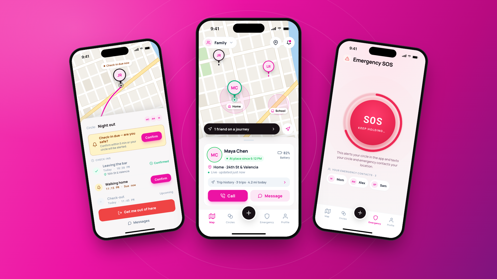

<!doctype html>
<html><head><meta charset="utf-8">
<title>SafeCircle 3.0 Press Release</title>
<link href="https://fonts.googleapis.com/css2?family=Manrope:wght@500;600;700;800&family=Poppins:wght@500;600;700;800&family=Roboto+Mono:wght@500;700&display=block" rel="stylesheet">
<style>
  @page { size: 8.5in 11in; margin: 0; }
  html, body { margin: 0; -webkit-font-smoothing: antialiased; background: #fff; }
  * { box-sizing: border-box; }
  .page { position: relative; width: 816px; height: 1056px; overflow: hidden; page-break-after: always; background: #fff; color: #1F1720; font: 500 12.5px/1.6 Manrope; }
  .page:last-child { page-break-after: auto; }
  .pad { position: absolute; inset: 0; padding: 60px 64px 70px; }
  .eyebrow { font: 800 11px Manrope; letter-spacing: 2.2px; text-transform: uppercase; color: #EC13A4; }
  h1, h2, h3 { font-family: Poppins; margin: 0; letter-spacing: -.4px; }
  h2 { font: 700 30px/1.15 Poppins; color: #1F1720; letter-spacing: -.8px; }
  p { margin: 0 0 11px; }
  .ph { color: #B80A80; background: #FDE7F5; border-radius: 4px; padding: 0 4px; font-weight: 700; }
  .foot { position: absolute; left: 64px; right: 64px; bottom: 28px; display: flex; justify-content: space-between; align-items: center; font: 700 10px Manrope; color: #9A8F98; letter-spacing: .4px; }
  .foot .dot { display: inline-block; width: 7px; height: 7px; border-radius: 50%; background: #EC13A4; margin-right: 7px; vertical-align: 1px; }
  .card { background: #F8F6F7; border-radius: 18px; padding: 18px 18px 16px; }
  .chip { display: inline-flex; align-items: center; justify-content: center; width: 34px; height: 34px; border-radius: 11px; background: #FDE7F5; flex: none; }
  ul.feat { list-style: none; margin: 6px 0 0; padding: 0; }
  ul.feat li { position: relative; padding-left: 15px; margin: 0 0 3.5px; font: 600 11.4px/1.45 Manrope; color: #3B3139; }
  ul.feat li::before { content: ''; position: absolute; left: 2px; top: 6px; width: 5px; height: 5px; border-radius: 50%; background: #EC13A4; }
</style>
<script src="kit.js"></script></head><body><div id="doc"></div>
<script>
const SCALE_W = 393, SCALE_H = 852;
// iPhone frame around a recreated app screen; s = scale of the 417x876 device
const phone = (name, opts, s, extra = '') => `<div style="position:relative;width:${417 * s}px;height:${876 * s}px;flex:none;${extra}">
  <div style="position:absolute;left:0;top:0;width:417px;height:876px;transform:scale(${s});transform-origin:0 0">
    <div style="position:absolute;inset:0;border-radius:62px;background:#0B0B0D;box-shadow:0 0 0 2px #3a3a3e inset,0 40px 70px -20px rgba(40,0,30,.55)"></div>
    <div style="position:absolute;left:12px;top:12px;border-radius:50px;overflow:hidden">${phoneScreen(name, opts)}</div>
  </div></div>`;
const foot = (n) => `<div class="foot"><div><span class="dot"></span>SafeCircle 3.0 · Press kit</div><div>${n}</div></div>`;
const ring = (cx, cy, d, a) => `<div style="position:absolute;left:${cx - d / 2}px;top:${cy - d / 2}px;width:${d}px;height:${d}px;border-radius:50%;border:1.5px solid rgba(255,255,255,${a})"></div>`;

// ---------------------------------------------------------------- page 1: cover
const cover = `<div class="page" style="background:linear-gradient(160deg,#F43BB0 0%,#EC13A4 38%,#B80A80 78%,#37207B 125%);color:#fff">
  <div style="position:absolute;inset:0;background:radial-gradient(60% 40% at 10% 0%,rgba(255,255,255,.22),transparent 70%)"></div>
  ${[300, 470, 640, 810, 980].map((d, i) => ring(408, 820, d, 0.2 - i * 0.035)).join('')}
  <div class="pad">
    <div style="display:flex;align-items:center;justify-content:space-between">
      <div style="display:flex;align-items:center;gap:14px"><div style="font:700 26px Poppins;letter-spacing:-.4px">SafeCircle</div></div>
      <div style="font:800 10.5px Manrope;letter-spacing:2.4px;border:1.5px solid rgba(255,255,255,.55);border-radius:99px;padding:8px 14px">PRESS RELEASE</div>
    </div>
    <div style="margin-top:62px;font:800 11px Manrope;letter-spacing:2.6px;color:#FFD3EF">INTRODUCING SAFECIRCLE 3.0</div>
    <h1 style="margin-top:14px;font:800 60px/1.02 Poppins;letter-spacing:-2.2px">Your people.<br>Your rules.<br><span style="color:#FFD3EF">Your time.</span></h1>
    <div style="margin-top:22px;max-width:560px;font:600 17px/1.5 Manrope;color:rgba(255,255,255,.92)">The safety app built around circles: you choose exactly who watches over you, and for how long. Nobody else. Not a minute more.</div>
    <div style="margin-top:24px;display:flex;gap:10px;font:700 12px Manrope">${['Circles', 'Journeys & check-ins', 'Panic PIN', 'One-hold SOS'].map((t) => `<span style="background:rgba(255,255,255,.16);border-radius:99px;padding:7px 13px">${t}</span>`).join('')}</div>
  </div>
  <div style="position:absolute;left:0;right:0;top:600px;display:flex;justify-content:center;align-items:flex-start">
    ${phone('journey', {}, 0.5, 'transform:rotate(-9deg);margin-top:70px;margin-right:-36px')}
    ${phone('map', {}, 0.6, 'z-index:2')}
    ${phone('sos', {}, 0.5, 'transform:rotate(9deg);margin-top:70px;margin-left:-36px')}
  </div>
  <div style="position:absolute;left:0;right:0;bottom:0;height:150px;background:linear-gradient(to top,rgba(55,32,123,.75),transparent)"></div>
  <div style="position:absolute;left:64px;right:64px;bottom:34px;display:flex;justify-content:space-between;align-items:center;font:700 12px Manrope">
    <div style="font:800 11px Manrope;letter-spacing:2px;opacity:.9">SAFECIRCLE 3.0</div>
    <div style="opacity:.95">Free on the App Store · iPhone &amp; iPad</div>
  </div>
</div>`;

// ---------------------------------------------------------------- page 2: the release
const circleCard = (emoji, name, who, ids, when) => `<div class="card" style="flex:1;background:#fff;box-shadow:0 0 0 1.5px #F1E6EE">
  <div style="font:700 15px Poppins;color:#1F1720">${emoji} ${name}</div>
  <div style="display:flex;margin:10px 0 10px">${ids.map((k, i) => `<div style="margin-left:${i ? 6 : 0}px">${avatar(PEOPLE[k], 30, '#EC13A4')}</div>`).join('')}</div>
  <div style="font:600 10.5px/1.45 Manrope;color:#6E626C">${who}</div>
  <div style="margin-top:8px;display:inline-flex;align-items:center;gap:6px;font:800 10px Manrope;color:#B80A80;background:#FDE7F5;border-radius:99px;padding:5px 10px">${ic('clock', 12, '#B80A80', 2.6)}${when}</div>
</div>`;
const release = `<div class="page"><div class="pad">
  <div style="display:flex;justify-content:space-between;align-items:center">
    <div class="eyebrow">For immediate release</div>
    
  </div>
  <h2 style="margin-top:14px;font-size:28px">SafeCircle 3.0 puts you in charge of who watches over you, and for how long</h2>
  <div style="margin-top:10px;font:600 14px/1.5 Manrope;color:#6E626C">Create private circles, let them follow your journey only while it matters, and send help with a single hold, or a secret PIN.</div>
  <div style="height:2px;background:linear-gradient(90deg,#EC13A4,#37207B);border-radius:2px;margin:20px 0 18px;width:90px"></div>
  <div style="columns:2;column-gap:30px;font-size:12px">
    <p><b><span class="ph">[CITY]</span>, November 2026</b> — SafeCircle today launched version 3.0 of its personal-safety app for iPhone and iPad, rebuilt from the ground up around one simple idea: <b>safety should never cost you your privacy.</b></p>
    <p>Most location apps ask you to be visible to everyone, all the time. SafeCircle flips that. You create <b>circles</b>, small private groups like <i>Family</i>, <i>Roommates</i> or <i>Friday-night crew</i>, and only the people you invite, and who accept, can ever see you.</p>
    <p>Then you decide <b>for how long</b>. Heading home after a late shift or meeting someone new? Start a journey, pick <b>who's watching</b>, and set your check-ins. That circle follows you until you check out with your PIN. Want a break from sharing? Pause it any time. Because pausing needs your PIN too, nobody else can switch it off for you.</p>
    <p>If something goes wrong, SafeCircle acts fast. Miss a check-in and, after a short grace period, your circle is alerted with your last known location. Hold the SOS button and your emergency contacts get a text with a live-location link, even if they've never installed the app. And if someone forces you to unlock your phone, entering your <b>panic PIN</b> makes everything look normal while your circle is silently told you need help.</p>
    <div style="break-inside:avoid;margin:14px 0 14px;padding:16px 18px;border-left:4px solid #EC13A4;background:#FDF3FA;border-radius:0 14px 14px 0">
      <div style="font:600 14.5px/1.45 Poppins;color:#37207B">“Feeling safe shouldn't mean being watched by everyone, forever. With SafeCircle, you pick your people and you pick the moment, and when it's over, it's over.”</div>
      <div style="margin-top:8px;font:700 11px Manrope;color:#6E626C"><span class="ph">[Name]</span>, <span class="ph">[Title]</span>, SafeCircle</div>
    </div>
    <p>SafeCircle 3.0 is for students walking home, parents with teens, people on a first date, solo travelers, night-shift workers, and anyone who simply wants someone to know they made it.</p>
    <p><b>Availability.</b> SafeCircle 3.0 is available now as a free download on the App Store for iPhone and iPad, in English, Spanish, French, Portuguese, Hindi and Chinese.</p>
  </div>
  <div style="margin-top:34px" class="eyebrow">How circles work</div>
  <div style="display:flex;gap:12px;margin-top:10px">
    ${circleCard('🏠', 'Family', 'Mom and your brother see you on the map and get a ping when you get home.', ['mom', 'leo'], 'Until you pause')}
    ${circleCard('🏡', 'Roommates', 'Watching tonight\'s walk home from the station, check-ins every 30 minutes.', ['maya', 'sam'], 'Just this journey')}
    ${circleCard('🌙', 'Night out', 'Alex follows the first date. When you check out with your PIN, it ends.', ['alex'], 'Until you check out')}
  </div>
</div>${foot('2')}</div>`;

// ---------------------------------------------------------------- page 3: the idea, visual
const pillar = (icon, title, body) => `<div style="flex:1;background:rgba(255,255,255,.1);border:1px solid rgba(255,255,255,.18);border-radius:20px;padding:20px">
  <div style="width:40px;height:40px;border-radius:12px;background:#fff;display:flex;align-items:center;justify-content:center">${ic(icon, 20, '#EC13A4', 2.4)}</div>
  <div style="margin-top:14px;font:700 18px/1.2 Poppins;color:#fff">${title}</div>
  <div style="margin-top:8px;font:600 11.5px/1.5 Manrope;color:rgba(255,255,255,.85)">${body}</div></div>`;
const orbit = (k, x, y, label) => `<div style="position:absolute;left:${x}px;top:${y}px;transform:translate(-50%,-50%);text-align:center">${avatar(PEOPLE[k], 46, '#fff')}<div style="margin-top:6px;font:800 10px Manrope;color:#fff;white-space:nowrap">${label}</div></div>`;
const idea = `<div class="page" style="background:linear-gradient(170deg,#37207B 0%,#4B1E86 45%,#B80A80 120%);color:#fff">
  <div class="pad">
    <div class="eyebrow" style="color:#FFB8E6">The SafeCircle idea</div>
    <h2 style="margin-top:12px;color:#fff;font-size:36px;max-width:620px">Someone always knows you're safe. <span style="color:#FFB8E6">Only the someone you choose.</span></h2>
    <div style="position:relative;height:440px;margin-top:40px">
      ${ring(344, 210, 150, .35)}${ring(344, 210, 270, .24)}${ring(344, 210, 390, .14)}
      <div style="position:absolute;left:344px;top:210px;transform:translate(-50%,-50%);text-align:center">${avatar(PEOPLE.you, 74, '#EC13A4')}<div style="margin-top:8px;font:800 12px Manrope">You</div></div>
      ${orbit('mom', 250, 120, 'Mom · Family')}${orbit('leo', 452, 112, 'Leo · Family')}
      ${orbit('maya', 190, 290, 'Maya · Roommates')}${orbit('alex', 505, 300, 'Alex · Night out')}
      ${orbit('sam', 344, 375, 'Sam · Roommates')}
      <div style="position:absolute;left:560px;top:40px;width:130px;font:600 11px/1.5 Manrope;color:rgba(255,255,255,.75)">Everyone outside your circles sees <b style="color:#fff">nothing</b>. No public profile, no strangers, just the people you chose.</div>
      <div style="position:absolute;left:-6px;top:340px;width:140px;font:600 11px/1.5 Manrope;color:rgba(255,255,255,.75)">Each journey is watched by the circle <b style="color:#fff">you pick</b> for it.</div>
    </div>
    <div style="display:flex;gap:14px;margin-top:40px">
      ${pillar('users', 'You choose who', 'Build as many circles as your life needs. People join only when you invite them by text and they accept. Remove anyone, anytime.')}
      ${pillar('clock', 'You choose how long', 'A circle watches a journey from start to check-out, then it ends. Pause live sharing whenever you want, protected by your PIN.')}
      ${pillar('shield', 'Help when it counts', 'Missed check-in, SOS or panic PIN: your circle and emergency contacts are alerted with your location, in seconds.')}
    </div>
  </div>
  <div class="foot" style="color:rgba(255,255,255,.6)"><div><span class="dot" style="background:#FFB8E6"></span>SafeCircle 3.0 · Press kit</div><div>3</div></div>
</div>`;

// ---------------------------------------------------------------- page 4: screenshots
const SHOTS = [
  ['01', 'Live map', 'See your circles in real time, with movement and battery.'],
  ['02', 'Check-ins', 'Miss one and the circle watching your journey is told.'],
  ['03', 'One-hold SOS', 'Texts your emergency contacts a live-location link.'],
  ['04', 'Panic PIN', 'Looks completely normal. Silently gets help.'],
  ['05', 'Places', 'A ping when someone arrives home or at school.'],
  ['06', 'No app needed', 'Emergency contacts get texts, even without SafeCircle.'],
];
const gallery = `<div class="page"><div class="pad">
  <div class="eyebrow">See it in action</div>
  <h2 style="margin-top:10px">Designed for the moments that matter</h2>
  <div style="display:grid;grid-template-columns:repeat(3,166px);justify-content:space-between;gap:20px 0;margin-top:22px">
    ${SHOTS.map(([n, t, d]) => `<div>
      
      <div style="margin-top:9px;font:700 13px Poppins;color:#1F1720">${t}</div>
      <div style="font:600 10.5px/1.4 Manrope;color:#6E626C">${d}</div></div>`).join('')}
  </div>
</div>${foot('4')}</div>`;

// ---------------------------------------------------------------- page 5: full feature list
const group = (icon, title, items) => `<div style="break-inside:avoid;margin-bottom:22px">
  <div style="display:flex;align-items:center;gap:10px"><span class="chip">${ic(icon, 17, '#EC13A4', 2.4)}</span><div style="font:700 14px Poppins;color:#1F1720">${title}</div></div>
  <ul class="feat">${items.map((i) => `<li>${i}</li>`).join('')}</ul></div>`;
const features = `<div class="page"><div class="pad">
  <div class="eyebrow">Everything in SafeCircle 3.0</div>
  <h2 style="margin-top:10px">The full feature list</h2>
  <div style="columns:2;column-gap:30px;margin-top:20px">
    ${group('users', 'Circles', [
      'Create as many circles as you need, each with its own name and emoji',
      'Invite people by text message, no app needed to receive the invite',
      'Invitees accept or decline; nobody joins without saying yes',
      'Add or remove participants, resend invites, import from contacts',
      'Rename, leave or delete a circle at any time',
    ])}
    ${group('map', 'Live map', [
      'Real-time location of everyone in your circles',
      'Moving or stopped status and last-update time',
      'Battery level and charging status for each person',
      'Call, message or open directions straight from the map',
      'Pause and resume sharing; pausing requires your PIN',
    ])}
    ${group('navigation', 'Journeys & check-ins', [
      'Plan a journey with a note (e.g. "Meeting at the bar")',
      'Choose who\'s watching: the circle that monitors this journey',
      'Schedule several check-ins plus a final check-out',
      'Reminders when a check-in is due, and a last call',
      'Short grace period, then the circle is alerted automatically',
      'See friends\' active journeys and your journey history',
    ])}
    ${group('lock', 'Safety PIN & panic PIN', [
      'A 4-digit safety PIN confirms check-ins and ends journeys',
      'A separate panic PIN looks normal but sends a silent alert',
      'Change either PIN at any time from Settings',
    ])}
    ${group('shield', 'Emergency SOS', [
      'Hold-to-alert SOS button that can\'t be triggered by accident',
      'Alerts your circles in the app instantly',
      'Texts emergency contacts a link to your live location',
      'Text your location to contacts with one tap',
      '"I\'m safe" cancels the alert and lets everyone know',
    ])}
    ${group('bell', 'Alerts & activity', [
      'Alert details: live location and position at the time of the alert',
      'Last recorded check-in and one-tap "Open in Maps"',
      'Mark alerts resolved, or reopen them',
      'Activity feed of invites, arrivals and alerts',
    ])}
    ${group('map-pin', 'Places', [
      'Save home, school, work, the gym, or anywhere you like',
      'Adjustable alert radius for each place',
      'Alerts on arrive, on leave, both, or off',
    ])}
    ${group('activity', 'Trip history', [
      'Your trips this week and last week, with trips-per-week chart',
      'Time, speed and distance for each trip',
      'Replay a route on the map',
    ])}
    ${group('phone-call', 'Emergency contacts', [
      'Add people by phone number; they don\'t need the app',
      'Texted on SOS, missed check-ins and panic PIN, and when you\'re safe',
    ])}
    ${group('user', 'Privacy & account', [
      'Location is shared only with circles you\'ve joined',
      'Delete your account and history at any time',
      'Six languages: EN, ES, FR, PT, HI, ZH',
      'Built for iPhone and iPad',
    ])}
  </div>
</div>${foot('5')}</div>`;

// ---------------------------------------------------------------- page 6: fact sheet & contact
const fact = (k, v) => `<div style="display:flex;padding:9px 0;border-bottom:1px solid #F1E6EE"><div style="width:150px;font:800 10.5px Manrope;color:#9A8F98;letter-spacing:.6px;text-transform:uppercase">${k}</div><div style="flex:1;font:700 12px Manrope;color:#1F1720">${v}</div></div>`;
const facts = `<div class="page">
  <div style="position:relative;height:420px;overflow:hidden"></div>
  <div class="pad" style="top:420px;padding-top:36px">
    <div style="display:flex;gap:40px">
      <div style="flex:1.15">
        <div class="eyebrow">Fact sheet</div>
        <div style="margin-top:10px">
          ${fact('App', 'SafeCircle: Safety &amp; Location')}
          ${fact('Version', '3.0')}
          ${fact('Platforms', 'iPhone and iPad')}
          ${fact('Price', 'Free')}
          ${fact('Category', 'Social Networking')}
          ${fact('Languages', 'English, Spanish, French, Portuguese, Hindi, Chinese')}
          ${fact('Download', 'App Store: search "SafeCircle"')}
          ${fact('Website', '<span class="ph">[safecircle website]</span>')}
        </div>
      </div>
      <div style="flex:1">
        <div class="eyebrow">About SafeCircle</div>
        <p style="margin-top:10px;font-size:12px">SafeCircle is a personal-safety app that keeps the people you trust one tap away. Users create private circles, share their live location only with them, plan journeys with check-ins, and call for help with a one-hold SOS or a silent panic PIN. SafeCircle's promise is simple: someone always knows you're safe, and only the someone you choose.</p>
        <div class="card" style="margin-top:16px">
          <div class="eyebrow" style="color:#37207B">Media contact</div>
          <div style="margin-top:8px;font:700 12px/1.7 Manrope"><span class="ph">[Name]</span><br><span class="ph">[email@safecircle]</span><br><span class="ph">[phone]</span></div>
          <div style="margin-top:8px;font:600 10.5px/1.45 Manrope;color:#6E626C">Screenshots, app preview video and logo available on request.</div>
        </div>
      </div>
    </div>
    <div style="margin-top:26px;display:flex;align-items:center;gap:16px;background:linear-gradient(110deg,#EC13A4,#B80A80 70%,#37207B);border-radius:20px;padding:18px 22px;color:#fff">
      
      <div style="flex:1"><div style="font:700 18px Poppins">Create your first circle today.</div><div style="font:600 11.5px Manrope;opacity:.9">Free on the App Store for iPhone and iPad.</div></div>
      <div style="background:#fff;color:#B80A80;font:800 12px Manrope;border-radius:99px;padding:10px 18px">Download SafeCircle</div>
    </div>
    <div style="margin-top:14px;font:600 9px/1.45 Manrope;color:#9A8F98">SafeCircle does not replace emergency services. In an emergency, call your local emergency number. People and places shown are illustrative.</div>
  </div>
  ${foot('6')}
</div>`;

document.getElementById('doc').innerHTML = cover + release + idea + gallery + features + facts;
Promise.all([document.fonts.ready, ...[...document.images].map((i) => i.complete ? 0 : new Promise((r) => { i.onload = i.onerror = r; }))])
  .then(() => { document.body.dataset.ready = '1'; });
</script></body></html>
